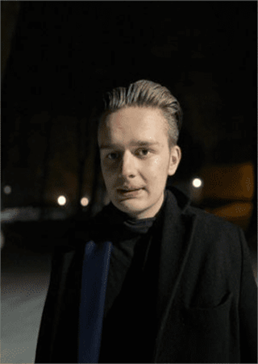

Raphäel Schrott ps. Turtle
Urodzony 14 lutego 2005 roku prawdopodobnie w Olsztynie w nim także zamieszkały, do jego największych zainteresowań należy
alkohol, dobre sznycowanie, i malarstwo jednak tylko te wywodzące się z Austrii.

Sznycowanie na dworzu
Osiągnięcia
- Zdobycie radzieckiej czapki
- Stworzenie obozu (harcerskiego) w Minecraft.
Ważne wydarzenia
- Degustacja rosołu
Ciekawostki
- Jego pseudonim w tłumaczeniu na język polski oznacza "żółw"